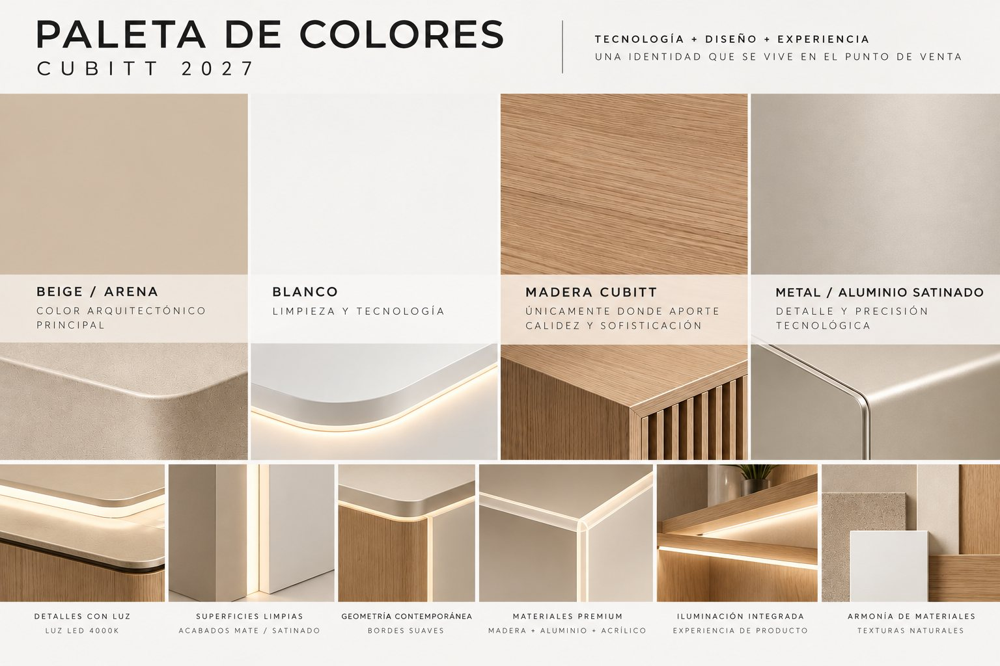

Mobiliario 2027 · Propuesta de diseño
Un volumen sereno, una lámina de luz y el logo Cubitt en platino. Tres piezas, cinco componentes y un solo ADN, pensado para producirse sin sobrecostos.
Cargando escena 3D…
Tu navegador no muestra 3D; las imágenes de cada sección muestran la propuesta.
Arrastra para girar · rueda o pellizco para acercar. Medidas reales del brief.
01 · El sistema
La familia no son tres muebles distintos: es un mismo volumen que cambia de escala. Cada pieza se arma con los mismos cinco componentes, así el taller fabrica en serie, la tienda se reconoce desde lejos y el costo se mantiene bajo.
02 · Tipología 01
150 × 90 × 70 cm ancho × alto × fondo
La pieza central del Touch & Try. Su frente es una sola lámina de luz con el logo platino, así la mesa tiene presencia aunque no tenga producto. Sobre la cubierta, un elevador opal iluminado de 10 cm crea el segundo nivel para el producto principal.
Mesa · La luz
El frente es una caja de luz de 8 cm de fondo: cinta LED COB 4000K sobre fondo blanco y, delante, acrílico opal de 3 mm (transmisión de luz de 50–60 %). Con esa distancia la luz sale pareja y no se ven los LED. La lámina va en un perfil de aluminio en U y se desmonta con clips para mantenimiento o para poner un vinilo translúcido de campaña.
Prueba el botón Luz encendida / apagada en el modelo 3D.
Mesa · Lado vendedor
Dos puertas push y un cajón con juntas de 3 mm, sin manijas. Adentro hay entrepaño, bandeja de cables con regleta y el transformador de 24 V ventilado, accesibles solo desde atrás. El cuerpo se fabrica en dos módulos que pasan por una puerta de 0,80 m.
03 · Tipología 02
120 × 140 × 40 cm ancho × alto × fondo
Abajo un gabinete arena de 85 cm con puertas push; arriba, un back panel de lámina opal de 55 cm que es la caja de luz del mueble. No hay copete añadido: la luz y el logo son la arquitectura.
Laterales terminados en arena, cableado por el interior y una sola toma por módulo. Sirve para relojes, audífonos, termos, accesorios y campañas.
Mueble · Modular
Los módulos se unen lado a lado y las láminas forman una franja continua de luz. El logo va en un solo módulo; el resto lleva gráfica de campaña o queda en luz pura. Así no se satura el branding.
04 · Tipología 03
50 × 30 × 25 cm ancho × alto × fondo
La misma mesa en pequeño, no una versión barata: base arena, cubierta de roble, lámina opal iluminada por el canto y el logo platino. Tres checkpoints de seguridad salen de la cubierta y un riel de aluminio lleva precio y CTA.
05 · Branding
Usamos el logo oficial sin cambios: la palabra Cubitt y la retícula de puntos con sus conectores. Solo cambia el acabado, a un platino de plata cálida que combina con el aluminio y elimina el negro del mobiliario.
| Fabricación | Acrílico de 6 mm cortado con láser a partir del vector oficial |
|---|---|
| Cara | Vinilo de aluminio cepillado (tipo 3M 1080 Brushed Aluminum) o pintura metalizada platino |
| Montaje | Adherido a la lámina opal; la luz trasera lo recorta con un halo suave |
| Color de referencia | Pantone 877 C · digital #D6D2CA → #B0ACA4 |
| Tamaños | Mesa 60 cm · Mueble 42 cm · Sobremesa 30 cm de ancho |
06 · Materiales para producción
Todo sale de proveedores con los que ya se fabricó la tienda de Centro Mayor: melamina, acrílico, perfilería de aluminio y LED de 24 V. No hay curvas compuestas, lacas especiales ni piezas fundidas.
| Componente | Material | Por qué |
|---|---|---|
| Cuerpo | MDF 18 mm melamina arena mate + canto PVC 2 mm | Sin pintura ni laca; resiste el uso en piso de venta |
| Esquinas | R30 solo en aristas verticales (pieza maciza torneada o MDF curvado) | Bordes suaves sin complicar el armado |
| Cubierta | Melamina roble claro 15 + 15 mm reengrosada, esquinas R30 por CNC | Calidez de la madera Cubitt sin el costo de una chapa natural |
| Lámina de luz | Acrílico opal 3 mm (o policarbonato opal, si hay que bajar costo) | Luz pareja, liviana y fácil de cambiar |
| Iluminación | Cinta LED COB 24 V 4000K, CRI > 90, con driver interno | Línea continua sin puntos y misma temperatura en todo el sistema |
| Perfilería | Aluminio anodizado mate natural, perfil en U comercial | Precisión tecnológica sin piezas a medida |
| Logo | Acrílico 6 mm + vinilo aluminio cepillado | Platino sin pintura electrostática |
07 · Construcción
08 · Presupuesto
Valores estimados de costo directo por unidad, calculados con los precios unitarios ya pagados en la tienda de Centro Mayor (data/presupuesto.csv). No incluyen AIU ni IVA y deben validarse con el taller antes de producir.
| Pieza | Rango (COP) | Base de cálculo |
|---|---|---|
| Mesa de experiencia | 4,6 – 5,4 M | Isla de relojes 1.3.1 ($3,9 M) + caja de luz frontal (≈ $0,9 M/m², ítem CL4) + logo (1.9.8) |
| Mueble de exhibición | 3,0 – 3,6 M | Panel mural backlit 1.3.3 ($2,5 M) + gabinete inferior + logo |
| Display de sobremesa | 0,6 – 0,9 M | Caja de luz tipo 1 CL6 ($580 k) + base y 3 checkpoints |
| Familia (1 mesa + 2 muebles + 1 sobremesa) | 11,2 – 13,5 M | Costo directo, antes de AIU |
09 · Modelos 3D generados con Higgsfield
Higgsfield convirtió los renders limpios de la mesa y del mueble en modelos GLB texturizados. Gíralos para revisar volumen y proporción; la escena de arriba muestra las medidas exactas. Cada modelo pesa cerca de 60 MB, así que se carga solo cuando lo eliges.
Elige un modelo para cargarlo.
10 · Cumplimiento del brief

11 · Galería